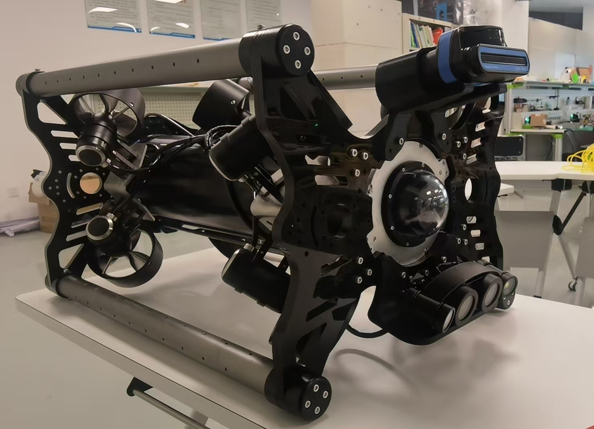

Platform engineering
平台工程
Body structure, size limit, layout strategy, internal packaging and serviceability are handled as one platform problem.
平台结构、尺寸边界、布局方式、内部封装和可维护性作为统一的平台工程问题处理。
Capabilities
工程能力
The current materials show a capability picture that includes platform body, sealing logic, propulsion, control loop, ground station coordination, payload integration and field-side execution.
现有资料展示出的能力图谱包括平台本体、密封逻辑、推进与控制闭环、地面站协同、挂载集成以及面向现场的执行支持。

Core Capability
核心能力
Body structure, size limit, layout strategy, internal packaging and serviceability are handled as one platform problem.
平台结构、尺寸边界、布局方式、内部封装和可维护性作为统一的平台工程问题处理。
A usable underwater unit depends on coherent sealing, cable entry and maintenance logic rather than isolated waterproof parts.
可用的水下平台依赖统一的密封、进线和维护逻辑，而不是零散的防水部件堆叠。
Thruster layout, depth hold and stable observation behavior directly affect inspection effectiveness.
推进器布局、定深能力和稳定观测行为会直接影响巡检效率和结果可信度。
Monitoring, operator feedback and task adjustment must stay coherent for the robot to be practically useful.
只有当地面站监看、操控反馈和任务调整形成闭环，平台能力才真正可用。
HD video, sonar, sampling, water-quality sensing and manipulator-based work are handled as mission-dependent growth paths.
高清视觉、声呐、取样、水质检测和机械臂任务都按任务依赖的扩展路径处理。
Platform selection, field support and project-specific expansion are part of the current delivery picture, not afterthoughts.
平台选型、现场支持和项目化增配本身就是当前交付图谱的一部分，而不是附加项。
Capability Layer
能力层级
This separation is a trust issue. The site should never mix current direct delivery with reserve directions.
这是信任问题。官网不能把当前可直接交付能力和储备方向混写成同一层级。
Standard configuration: direct platform capability that can be delivered now.
标准配置：当前可以直接交付的平台能力。
Optional modules: available add-ons that do not require a fundamental platform rewrite.
可选模块：无需改写底层平台即可进行的模块增配。
Project-specific expansion: mission-driven support frames, interfaces and system changes.
项目化增配：围绕专项任务支架、接口和系统变化展开的配置。
Reserve R&D: directions discussed as reserve capability, not default promise.
研发储备：作为储备能力沟通，而不是默认交付承诺。
Delivery Models
交付模式
For users building regular in-house inspection and observation capability.
适合建立常态化自有巡检与观测能力的客户。
For short-cycle missions, validation work and temporary field review.
适合短周期任务、前期验证和阶段性现场复核。
For customers who need platform plus field-side operator or technical coordination.
适合需要平台与现场技术协同、操控支持的客户。
For missions that require sensing, brackets, environment modules or custom support interfaces.
适合需要感知、支架、环境模块或定制接口的专项任务。
The site should communicate capability with layered precision, then move the customer into a task-specific conversation instead of promising an all-inclusive fixed configuration.
官网应以分层方式准确表达能力，再把用户引导到任务化沟通，而不是承诺“全包含”的固定配置。
Contact
联系沟通
Start with operating depth, entry space, observation target and whether module growth is needed.
请先提供作业水深、入口空间、观测目标以及是否需要模块增配。